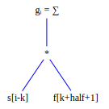
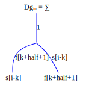
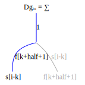
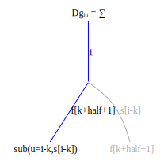
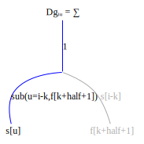
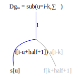
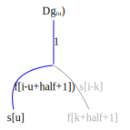
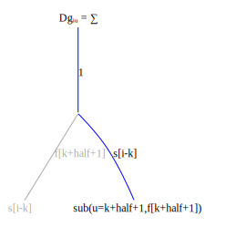
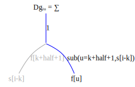
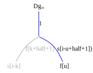

Create an expression graph for the convolution
\[g_i = \sum\limits_{l} s_{i-l}f_{l + half + 1}\]

Convert the expression graph to a derivative graph

Now compute the derivative $\frac{\partial g_i}{\partial s_u}$:

Ccreate a substitution rule for the indices of $s$:

Propagate the substitution up the derivative graph:
  
Notice that, as in the matrix vector multiplication example, the substitution in $\sum\limits_k$ node collapses that node to a no-op since the sum is non-zero only when $k=i-u$.
Create a FastDifferentiation function to check the derivative:
function sf()
s = make_variables(:s, 10)
f = make_variables(:f, 3)
half = length(f) ÷ 2
g(i) = FD.Node(sum((i - l < 1 || i - l > length(s) ? 0 : s[i-l] * f[l+half+1]) for l in -half:half))
[g(i) for i in 1:lastindex(s)], s, f
end
function Dsf()
g, s, f = sf()
return jacobian(g, s), jacobian(g, f)
endCompute the derivative with respect to s using FastDifferentiation:
julia> partial_s,_ = Dsf()
julia> display(partial_s)
10×10 Matrix{FastDifferentiation.Node}:
f2 f1 0.0 0.0 0.0 0.0 0.0 0.0 0.0 0.0
f3 f2 f1 0.0 0.0 0.0 0.0 0.0 0.0 0.0
0.0 f3 f2 f1 0.0 0.0 0.0 0.0 0.0 0.0
0.0 0.0 f3 f2 f1 0.0 0.0 0.0 0.0 0.0
0.0 0.0 0.0 f3 f2 f1 0.0 0.0 0.0 0.0
0.0 0.0 0.0 0.0 f3 f2 f1 0.0 0.0 0.0
0.0 0.0 0.0 0.0 0.0 f3 f2 f1 0.0 0.0
0.0 0.0 0.0 0.0 0.0 0.0 f3 f2 f1 0.0
0.0 0.0 0.0 0.0 0.0 0.0 0.0 f3 f2 f1
0.0 0.0 0.0 0.0 0.0 0.0 0.0 0.0 f3 f2Write a function to compute the index solution:
function index_solution_s()
s = make_variables(:s, 10)
f = make_variables(:f, 3)
half = length(f) ÷ 2
Dg(i, u) = 1 ≤ i - u + half + 1 ≤ length(f) ? f[i-u+half+1] : 0
[Dg(i, u) for i in 1:lastindex(s), u in 1:lastindex(s)]
endCompare the index solution results to FastDifferentiation
julia> index_solution()
10×10 Matrix{Number}:
f2 f1 0 0 0 0 0 0 0 0
f3 f2 f1 0 0 0 0 0 0 0
0 f3 f2 f1 0 0 0 0 0 0
0 0 f3 f2 f1 0 0 0 0 0
0 0 0 f3 f2 f1 0 0 0 0
0 0 0 0 f3 f2 f1 0 0 0
0 0 0 0 0 f3 f2 f1 0 0
0 0 0 0 0 0 f3 f2 f1 0
0 0 0 0 0 0 0 f3 f2 f1
0 0 0 0 0 0 0 0 f3 f2The index derivative will only require storage space for $f$ not for the 10x10 derivative matrix. This can be generated on the fly. The zeros of this matrix are implicitly represented in the index constraint equation $f_{i-u+half+1}$, with out of range indices automatically set to zero.
Now compute the derivative $\frac{\partial g_i}{\partial f_u}$:
  
Compute the derivative with respect to $f$ using FastDifferentiation
julia> _,partial_f= Dsf()
julia> display(partial_f)
10×3 Matrix{FastDifferentiation.Node}:
s2 s1 0.0
s3 s2 s1
s4 s3 s2
s5 s4 s3
s6 s5 s4
s7 s6 s5
s8 s7 s6
s9 s8 s7
s10 s9 s8
0.0 s10 s9Compare the result to the index solution
function index_solution_f()
s = make_variables(:s, 10)
f = make_variables(:f, 3)
half = length(f) ÷ 2
Dg(i, u) = 1 ≤ i - u + half + 1 ≤ length(s) ? s[i-u+half+1] : 0
[Dg(i, u) for i in 1:lastindex(s), u in 1:lastindex(f)]
end
julia> index_solution_f()
10×3 Matrix{Number}:
s2 s1 0
s3 s2 s1
s4 s3 s2
s5 s4 s3
s6 s5 s4
s7 s6 s5
s8 s7 s6
s9 s8 s7
s10 s9 s8
0 s10 s9The index derivative only requires storage space for $s$, not for the 10x3 derivative matrix, which can be computed dynamically.